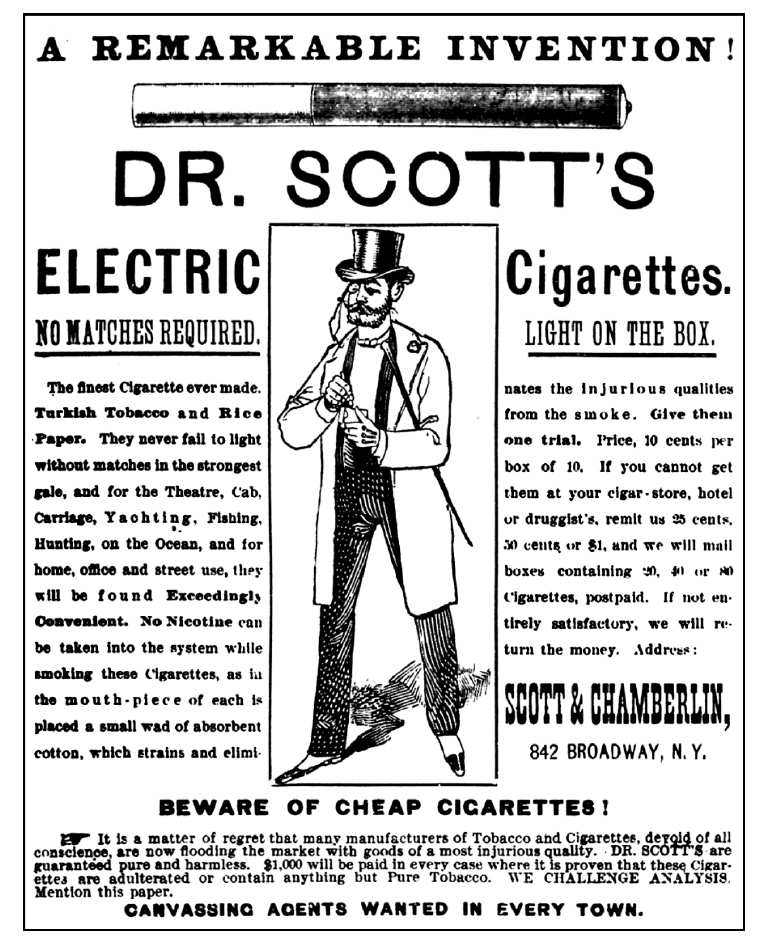
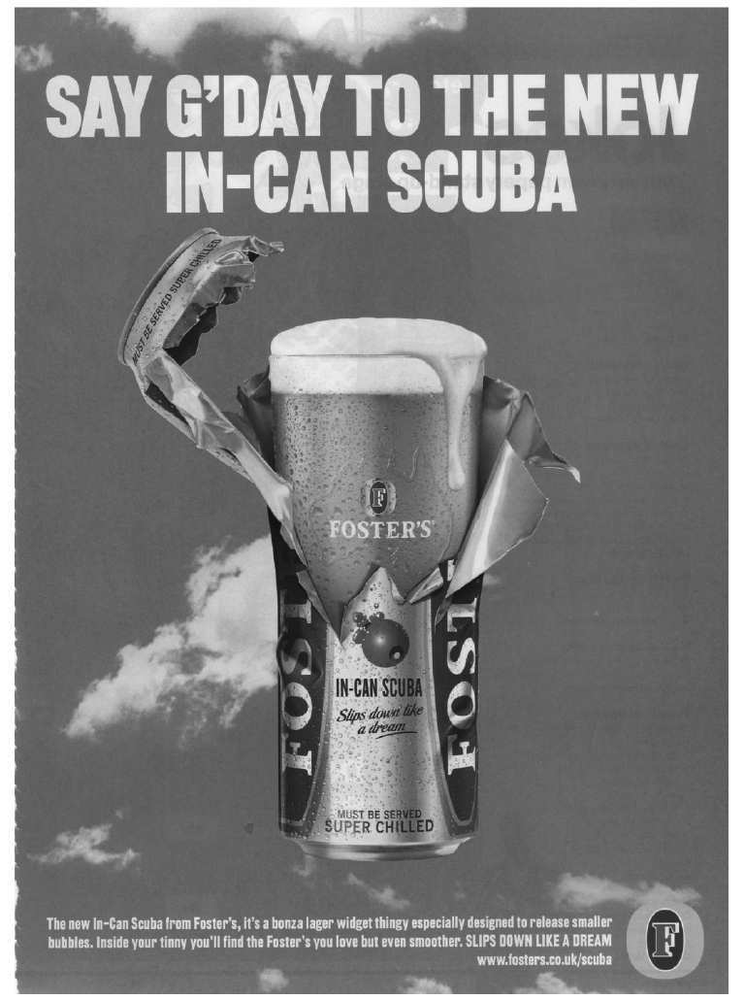

或许因为广告严重干扰了人们的生活，或许因为人们怀疑它们具有操控能力，广告行为一直以来都遭到了批评、对抗，并带来了恐惧，这一点在英国相比在美国更为明显。英国的贵族阶层和知识分子对于各种形式的贸易和商业活动所持的傲慢态度由来已久，他们也一直厌恶销售和销售员。这些态度在大西洋的另一边则没有那么普遍，尽管也偶有听闻。早在1830年，英国散文家和历史学家托马斯·麦考莱这样贬低广告行为：“我们要求我们的帽匠和靴匠能做到些许矜持，些许得体的自豪。”不久之后，苏格兰知识分子托马斯·卡莱尔同样讽刺了他所谓的“震耳欲聋的广告吹捧”。19世纪末，一个颇具影响力的压力集团“控制公共广告滥用协会”出版了一份成员名单，包括当时许多最负名望的作家和艺术家。威廉·莫里斯、拉迪亚德·吉卜林、霍尔曼·亨特、亚瑟·奎勒-考奇爵士以及约翰·米莱爵士都是该协会会员。但公众对此反应冷淡；控制公共广告滥用协会印了500份手册，结果只售出30份。
人们对于广告行为的反应模式大体就是如此，从那时起一直延续至今。许多（或许是大多数）作家、学者，甚至包括政治家都或多或少对广告持反对态度，但公众并不赞同这种敌意。然而，前者控制着社会中很大一部分权力。因此，自从19世纪中期开始，广告行为日益受到法律和管控的钳制，或许没有哪个其他行业受到的约束能与之相比。
1955年，商业电视出现在英国，这一情况受到高度关注。当进入商业电视的法案在上院讨论通过时，身为清教徒的苏格兰人里思勋爵激动地将引入电视广告与天花、黑死病和腺鼠疫等恶性疾病进入英国相提并论。其他高贵的上院议员也有同感。海尔什姆勋爵将商业电视比作“（莎剧中的半兽人）凯列班，正从他那泥泞的洞穴中钻了出来”。伊舍勋爵预言将出现“一场经过策划和预谋的粗俗的狂欢”。许多类似的令人恐惧的担忧源自英国知识分子对于美国电视的看法，他们认为后者粗俗且愚蠢。公众却无此担心，他们张开双臂欢迎商业电视。
然而，议会动用它的权力，对广告严加控制。促成英国商业电视的法案包含了若干规范，这些规范使得英国的商业电视不同于令人恐惧的美国模式。该法案特别规定，广告必须与电视节目完全分离，因此有了“广告时间”这样的说法。此外，允许播放的广告总体数量被严格限制（最初的限制是每小时仅有6分钟）。一个法定委员会将控制广告的标准，并且建立一整套准则，这些准则必须得到严格遵守。议员们认为，英国观众需要得到保护，确保他们不会遭到美国过度商业化的影响；而他们也的确作出了保护。在英国，电视广告在制作之前，其脚本必须得到批准，确保它符合法律要求的广告准则。广告在拍摄完成后，必须再次经过批准，确保广告严格根据脚本进行拍摄，没有越界情况出现。管理者对于广告规则的阐释极为严苛，广告投放者和广告代理机构都一再抱怨，这些规则的应用过于死板。但议会通过的法案以及后续的相关法案，坚持要求一丝不苟地执行这些规则。
从一开始，英国的电视广告就受到法律控制。但其他媒体的情况则大不相同。尤其是出版业在18世纪和19世纪为争取自由进行了艰苦斗争，当时的政府官员一再企图约束和限制出版的内容。这些斗争主要围绕编辑自由，但也涉及广告自由。广告投放者可以自由说出他们想说的话，只要不触犯法律。可以说，许多胆大的广告投放者将他们的自由推至极限。在19世纪中期，一些广告投放者承诺能治愈人们已知的所有疾病，甚至包括若干未知疾病。例如，“靴子里的死亡是新出现的疾病，所有穿鞋的人都将遭受威胁”，因此当人们听说“奥布莱恩的专利防水齐腰长筒套靴”可以安全治愈这种疾病，理应感到解脱。我们的美国兄弟们也不甘落后。在纽约，有位斯科特博士发明了一大批“电”器，利用了当时刚发现的电力所具有的近乎魔法的能量。其中之一是“电香烟”。另一种电器是“斯科特博士牌电石膏，一种新发明，借助电力治疗感冒，咳嗽，胸腔疼痛，神经紧张，肌肉和神经疼痛，胃、肾和肝疼痛，消化不良，疟疾，其他疼痛，风湿症，痛风和发炎”，治愈所有疾病只需“1至3个小时……如果达不到令人满意的效果，将返回购物款”。因此，事实很清楚。如果听之任之，广告投放者的言论将极力挑战事实极限，有时完全不顾事实。
由此，不可能再对广告投放者毫无约束，放任自流。1891年发生了一起具有划时代意义的案例。某位卡里尔夫人购买了一种药物，名曰“碳酸性烟雾炸弹”。广告上保证它可以防止得流感（以及其他许多疾病），否则购买者将得到100英镑的赔偿。烟雾炸弹最终爆炸了。卡里尔夫人得了流感，她起诉对方要求根据习惯法赔偿100英镑，并最终胜诉。法庭将广告视为一份合同。此后，英国于1893年通过了《货物买卖法》，在习惯法的基础上大幅度增加了消费者的民事赔偿金额。在整个20世纪，消费者针对广告投放者的法律权利得到了不断提升。

图15 如果听之任之，广告投放者的言论将极力挑战事实极限，有时完全不顾事实
但是，对于公众来说，将犯错的广告投放者告上法庭是一件费时伤财的事，并且投诉不见得就能获胜。很快人们就意识到，公众需要得到一个更加简便、花费更少的广告控制体系的保护。甚至在二战之前，就已经出现了要求广告业进行自我清理和自我规范的呼声。1927年，英国广告协会建立了首家负责进行自我调控的全国监督委员会，一年后，又扩展成为广告行为调查部。虽然按现在的标准来说力量很弱，但广告行为调查部在清理不正当的广告从业人员方面起到了一定的作用，并且说服了广告代理不再为欺诈性的广告投放者进行宣传。在1936-1937年度的12个月里，广告行为调查部一共处理了1，169起公众投诉。
二战之后，随着西方国家经济的复苏，从20世纪60年代起，消费者保护行动（消费者游说政府，要求改善购物标准，对消费者进行保护）迅速得到发展。1962年，英国广告管理局成立，其职责是处理消费者关于广告的投诉。但很快人们就发现，广告管理局是一只没有牙齿的老虎。它缺乏资金，人手也不足，它的权力有名无实。十多年之后的1974年，左翼领袖哈罗德·威尔逊出任英国首相。威尔逊贬低广告行为，将它视为对经济资源的浪费（当时许多经济学家也持这一态度）。1974年，广告业遭到政府警告，如果不主动对其他类型的广告加以限制，达到像电视广告一样的有效操控，政府将通过新法律，强制实行控制。我们已经看到，平面媒体天生就反感政府对媒体的控制，因此平面媒体和广告投放者立即对政府的威胁作出了反应。
1975年，改组后的广告管理局开始运作，规模比之前大了许多，资金也更为充裕。其资金募集方式是通过向广告投放者征收广告总费用的0.1%，由广告代理机构负责收缴。这一做法延续至今。在基本结构上，广告管理局独立于广告投放者所施加的压力。在广告业的合作下，经过政府批准，广告管理局制定了《广告施行法》，这些法规定期进行更新。广告管理局负责实施这些法规，在法规颁布后不久，它就露出利爪，采取一系列强硬措施打击那些误导消费者的、不诚实的广告投放者。广告管理局的公共职能和政治职能得到迅速发展，它的权力在那之后持续延伸。在20世纪90年代早期，直邮和直销被纳入广告管理局的监管范围。2004年，对电视和电台的管制也被移交给广告管理局，这与早期的情形正好相反。如今，大多数互联网广告同样在其控制之下。征收0.1%的费率听上去并不多；的确不多，但每年也能达到约一千万英镑。由此，广告管理局一百多名训练有素的员工每年能够处理超过2.5万起针对广告的公共投诉，其中通常只有不到10%的投诉经调查后证明有正当理由。
广告管理局如今被普遍视作理性的自我监管的典范，其名声不仅限于广告业内部，也波及其他行业；不仅在英国，也遍及全世界。
尽管广告管理局取得了成功，但它只负责处理单个广告，在一对一的基础上裁决这些广告是否违反了《广告施行法》。但是，这一体系并没有触及与整个产品类别相关的广告：比如酒类产品、高速车辆、富含脂肪的食品，或者香烟等。对整个广告行业的管理依然是政府的职责范围。
从20世纪60年代初开始，香烟一直是广告业的焦点，政治、医学和公众的注意力都集中于此。1962年3月，广告和吸烟第一次成为话题，当时皇家内科医学院发表了题为《吸烟与健康》的报告。两年后的1964年1月，美国公共卫生部部长发表了关于吸烟与健康之间关联的报告。两份报告都认为在吸烟和严重的疾病（尤其是肺癌）之间存在密切联系，并呼吁禁止针对儿童的香烟广告。在英国，这导致人们要求全面禁止电视广告。要施行这样的全面禁止很容易，因为电视广告受法律控制。禁止其他媒体上的广告需要议会立法，而政府知道出版机构将不惜一切手段进行抗争。因此，议会暂时没有处理其他媒体上的广告，但1965年8月1日，英国电视上的香烟广告被迫就此停播。当时，英国卫生部部长在议会发表了自己的看法：“我很怀疑，强化（反对吸烟的）行动能造成香烟消费的大幅度下降。”他说对了：英国的吸烟人数一直在持续增加，直到20世纪70年代中期。
香烟并非唯一被禁止在电视上投放广告的产品或服务。香烟也不是唯一能合法买卖却被禁止在电视上投放广告的商品，虽然香烟广告的支持者时常这样声称。呼气测试设备、婚姻中介、算命者、殡仪业人员，甚至（在当时）包括慈善机构和赌博机构，还有政治和宗教团体，这些产品或机构都可以合法地在其他媒体发布广告，但却从一开始就被禁止在商业电视上投放广告。但将香烟视为特例，并非毫无原因。之前在英国没有发生过类似情况。香烟是一种非常受欢迎的大众消费产品，大多数人都抽烟，它为数十万人提供了工作和收入，或许这个数字可以间接地达到几百万，并且它上缴高额税收，因此为国家提供了大量资金，从而能够应对许多社会性的需求。没有证据表明，禁播电视广告会带来任何好处。通过施加禁令，政府装作履行了自己的社会责任，而实际上却只是摆出一副样子来平息各方集团的压力。事实上，禁令的效果微乎其微。在随后的数十年里，吸烟对健康的危害警告出现在包装和广告上，政府频繁开展反吸烟宣传活动，不断有新的医学报告出现，揭露吸烟的危害。最后，唯一真正能减少吸烟的措施是增加巨额税收，从而使得吸烟变得难以负担，并且禁止在公共场合吸烟。尽管如此，在电视广告禁烟令实施近半个世纪之后，英国如今依然有约一千万人坚持吸烟，占总人口的约25%。
在关于吸烟的争论背后，潜藏着电视广告对于社会行为的影响。广告禁令究竟在多大程度上实现了社会规划目标？世界各地的压力集团认为，酒类广告让人们喝得更多，汽车广告让人们加速行驶，玩具广告让儿童纠缠父母，快餐食品和糖果广告让儿童（以及成人）肥胖，瘦身广告让女孩子厌食，药品广告则让人为健康而忧郁。广告业很难否定所有这些指责，否则就显得蛮不讲理（且不说自私自利）。如果广告没有促进这些习惯和这些市场，那么为什么广告投放者还要做广告呢？
20世纪末，随着这些行业性攻击变得越来越多，越来越频繁，英国广告协会经济委员会作出反应，在调查之后出版了一份报告，题为《广告行为影响市场规模吗？》，其目标是确定，酒类品牌的广告行为是否真的让人喝得更多（或者让更多人喝酒），玩具广告是否真的让父母花费更多，或者肥皂广告是否真的让人洗得更多。和许多类似的广告研究一样，他们找不到简单的、确定性的答案。不妨从报告中引用一小段：

图16 酒类广告让人们喝得更多吗？
研究显示，如果市场容量很大，已经牢固确立，稳定且满足基本需求，那么品牌广告很少增加市场（或产品所在行业）的容量。广告投放者也不会期望达到这种效果。香皂的广告投放者并不期望它们的广告能让人们洗得更多，同样宠物食品的广告投放者也不期望人们购买更多宠物，或者喂它们吃更多食品。同样，当报纸为自己进行广告宣传时，它们也不会期盼人们能读更多报纸。在所有这些例子以及无数的其他例子中，广告投放者的目的是打击竞争对手，增加自己的市场份额。这正是广告行为的目的所在，如果它能成功的话。
另一方面，在那些规模较小、新近出现或正在发展的市场（或产品所在行业）中，品牌广告看起来的确促进了增长，让更多人使用该产品，或者让已经使用该产品的人用得更多。例如，新的电器和电子产品就属于后者，新的小吃品种和消遣类产品同样如此。所发生的一切并非偶然。在这些市场里，广告投放者想要刺激市场增长，因为随着市场变大，市场内的所有品牌销售都会相应增加。
但是压力集团想要禁止广告宣传的大多数产品和实践（如酒类产品、“垃圾食品”、针对儿童的广告等）都属于前者：大型、稳定、牢固确立的市场。这就是为什么禁令不起作用的原因。有必要指出的是，当广告投放者刻意想增加大型、稳定、有品牌的产品的销量时，就像它们过去曾经为了牛奶、鸡蛋和肉类所做的那样，那些广告宣传活动同样无效。一旦整个社会在许多年甚至几个世纪的时间里对于某个特定产品有了固定看法，广告的力量就不足以使人们改变想法了。广告能够尽可能明确地销售品牌，但它在社会规划中的作用很小，如果它的确能发挥作用的话。（广告行为确实有助于减少酒后驾车，这是事实。但和吸烟的情况一样，广告行为得到了立法机构、警察、酒精测定计和无数的报刊宣传的大力支持。单凭广告行为本身根本无法做到这一点。）